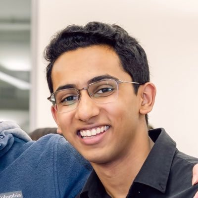
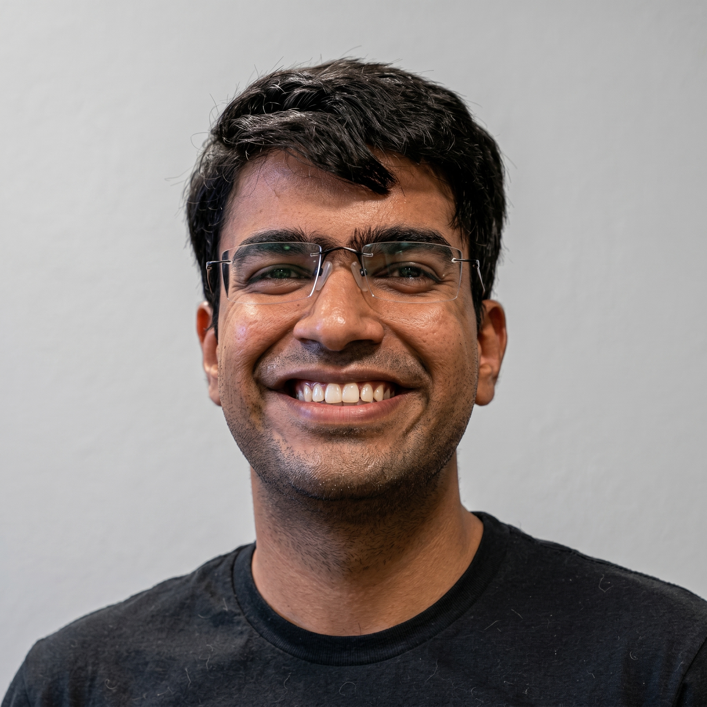
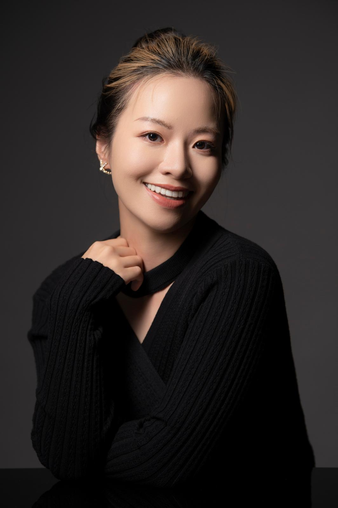

Invited Speakers

Razvan Pascanu
Google DeepMind / MILA
Razvan Pascanu has been a research scientist at Google DeepMind since 2014. Before this, he completed his PhD at Universite de Montréal with prof. Yoshua Bengio, where he worked on understanding deep networks, specifically recurrent neural architectures. During his career he has made significant contributions to theory of deep networks, optimization, recurrent architectures as well as deep reinforcement learning, continual learning, meta-learning and graph neural networks. He has been Program Chair for the Neural Information Processing Systems (NeurIPS) conference and currently acts as General Chair, as well as a Program Chair for the Conference on Life-long Learning Agents (CoLLAs) and the Learning on Graphs Conference (LoG). He has organized various workshops on topics such as continual learning at top-tier conferences. He is also one of the main organizers of the Eastern European Machine Learning Summer School (EEML) and EEML workshop series, as well as an organizer of the Romanian AI Days.

Bing Liu
University of Illinois at Chicago
Bing Liu is a Distinguished Professor and Peter L. and Deborah K. Wexler Professor of Computing at the University of Illinois Chicago (UIC). He earned his Ph.D. in Artificial Intelligence from the University of Edinburgh. His current research interests include continual or lifelong learning, autonomous learning from experience, learning to reason, machine learning, and natural language processing. He is the author of several books on these topics and has also received multiple Test-of-Time awards for his papers. Liu is the 2018 recipient of the ACM SIGKDD Innovation Award and a Fellow of AAAI, ACM, and IEEE.

Stephanie Chan
Google DeepMind
Stephanie Chan is a Staff Research Scientist at Google Deepmind. She received her PhD in computational neuroscience from Princeton University, and an SB in physics and an SB in brain & cognitive sciences, both from MIT. Her research covers a few broad areas. One set of work aims for a scientific understanding of modern AI models, especially in-context learning. She also works on developing AI systems for human enrichment and human empowerment. This has included work in AI for education, and AI to improve the information ecosystem. Now, her primary work revolves around understanding AI's future impacts on society.

Tinne Tuytelaars
KU Leuven
Tinne Tuytelaars is a full professor at KU Leuven and a leading researcher in computer vision and artificial intelligence. Her research focuses on image and video understanding, multimodal AI, and continual learning. She is passionate about building AI systems that can learn continuously and adapt to new situations, as well as moving towards genuine image and video understanding. Alongside her research, she enjoys sharing her knowledge and plays an active international leadership role in the AI community through major computer vision conferences and organizations. She received two ERC grants, the Koenderink test of time award, and various other prizes.

Jaehong Yoon
Nanyang Technological University
Dr. Jaehong Yoon is an Assistant Professor at Nanyang Technological University (NTU), Singapore. Prior to joining NTU, he was a postdoctoral research associate at UNC-Chapel Hill, working with Prof. Mohit Bansal. He received his Ph.D. at KAIST, advised by Prof. Sung Ju Hwang. His research focuses on building AI systems that reliably operate and continuously learn in complex real-world environments. Dr. Yoon has received several honors, including the AAAI New Faculty Highlights (2026), the NSCC Young Investigator Seed Project Award (2026), the CoLLAs Early-Career Spotlight (2025), and the Google PaliGemma Academic Program Award (2024). He will serve as the DEI Chair for CoLLAs 2026 and has served as an Area Chair for multiple venues, including NeurIPS 2025;2026, ACL 2026, NAACL 2025, and EMNLP 2024; 2025.

Parth Asawa
UC Berkeley
Parth Asawa is a PhD student at UC Berkeley advised by Professor Matei Zaharia and Professor Joey Gonzalez. Parth's research is on continual learning, studying how to enable models to stably learn from streams of experiences over time. His work focuses on sample-efficient learning and spans the stack of data, learning algorithms, and evaluation. He is grateful to be supported by the Laude Institute via their Open Research Residency.

Naman Goyal
Google DeepMind
Naman is a machine learning researcher and engineer at Google DeepMind, where he focuses on pushing the frontiers of large language model alignment and autonomous agent capabilities. Naman served as a Founding Engineer for Gemini Deep Research pioneering the long-horizon planning and context management systems that power complex, multi-step AI reasoning. He is also a co-author of the foundational Gemini 2.5 technical report. Previously he worked on multimodal foundation models at NVIDIA and vision-language systems at Apple. He holds a Masters in Computer Science from Columbia University and a Bachelors in Computer Science from IIT Ropar.

Jenny Ni
Jenny is a Senior AI Security and Trust & Safety Professional at Google, specializing in the development and deployment of secure, large-scale machine learning systems. With a deep expertise in multimodal AI safety, Jenny focuses on mitigating risks and building robust safeguards for complex AI models. Prior to her current role at Google, she drove key Trust & Safety initiatives at Apple. She brings a wealth of industry experience in scaling responsible AI systems from research into global consumer products.